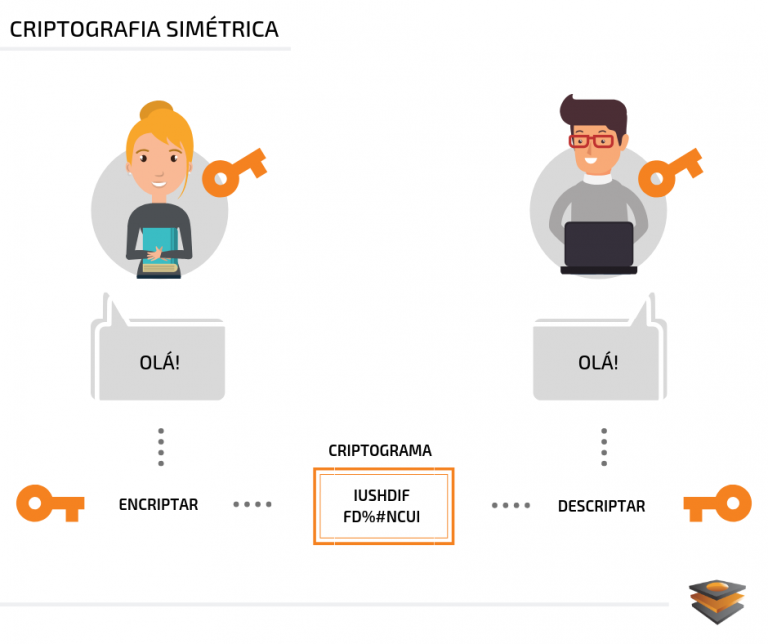

Criptografia é a prática de proteger informações por meio do uso de algoritmos codificados, hashes e assinaturas. As informações podem estar em repouso (como um arquivo em um disco rígido), em trânsito (como comunicação eletrônica trocada entre duas ou mais partes) ou em uso (durante a computação de dados). A criptografia tem quatro objetivos principais:
🔒Confidencialidade: disponibiliza as informações somente para usuários autorizados.
🔒Integridade: garante que as informações não tenham sido manipuladas.
🔒Autenticação: confirma a autenticidade das informações ou a identidade de um usuário.
🔒Não repúdio: impede que um usuário negue compromissos ou ações anteriores.
A criptografia usa vários algoritmos criptográficos de baixo nível para atingir um ou mais desses objetivos de segurança das informações. Essas ferramentas incluem algoritmos de encriptação, algoritmos de assinatura digital, algoritmos de hash e outras funções. Esta página descreverá alguns dos algoritmos criptográficos de baixo nível mais usados.
Para que serve a criptografia?
A criptografia tem origem no envio de informações confidenciais entre figuras militares e políticas. As mensagens deveriam ser criptografadas para parecerem textos aleatórios para qualquer pessoa, exceto para o destinatário pretendido.
Atualmente, as técnicas originais de encriptação foram completamente rompidas. Elas foram rompidas a ponto de serem encontradas apenas nas seções de enigmas de alguns jornais. Felizmente, o campo fez grandes avanços em segurança, e os algoritmos usados hoje dependem de análises e matemática rigorosas para sua segurança.
À medida que a segurança avançou, o campo da criptografia se expandiu para incluir uma gama mais ampla de objetivos de segurança. Isso inclui autenticação de mensagens, integridade de dados, computação segura e muito mais.
A criptografia compõe a base da sociedade moderna. É a base de inúmeras aplicações de Internet através do Secure Hypertext Transfer Protocol (HTTPS), da comunicação segura de texto e voz e até de moedas digitais.
O que é encriptação?
Um algoritmo de encriptação é um procedimento que converte uma mensagem de texto não criptografado em um texto cifrado criptografado. Os algoritmos modernos usam matemática avançada e uma ou mais chaves criptografadas. Isso torna relativamente fácil criptografar uma mensagem, mas praticamente impossível descriptografá-la sem conhecer as chaves.
As técnicas de encriptação se dividem em duas categorias, simétricas e assimétricas, com base em como suas chaves funcionam.
Exemplos de crimes cibernéticos
O que é criptografia de chave simétrica?
Os algoritmos criptográficos de chave simétrica usam as mesmas chaves de encriptação tanto para a encriptação do texto não criptografado quanto para a desencriptação do texto cifrado. A encriptação simétrica requer que todos os destinatários da mensagem tenham acesso a uma chave compartilhada.
As ilustrações a seguir mostram como a encriptação e a desencriptação funcionam com chaves e algoritmos simétricos, presumindo que todas as partes compartilhem a mesma chave.
Na primeira ilustração, uma chave simétrica e um algoritmo são usados para converter uma mensagem de texto não criptografado em texto cifrado. A segunda ilustração mostra a mesma chave secreta e algoritmo simétrico sendo usados para transformar o texto cifrado em texto não criptografado.

O que é criptografia assimétrica (chave pública)?
A criptografia assimétrica (ou de chave pública) consiste em um amplo conjunto de algoritmos. Estes são baseados em problemas matemáticos que são relativamente fáceis de executar em uma direção, mas que não podem ser facilmente revertidos.
Um exemplo famoso desse tipo de problema é o problema da fatoração: para números primos p e q cuidadosamente escolhidos, podemos calcular o produto N=p*q rapidamente. No entanto, dado apenas N, é muito difícil recuperar p e q.
Um esquema de encriptação é chamado assimétrico se utiliza uma chave (a chave pública) para criptografar dados, e uma chave diferente, mas matematicamente relacionada (a chave privada), para descriptografar dados.
Deve ser computacionalmente inviável determinar a chave privada se a única coisa que se conhece é a chave pública. Portanto, a chave pública pode ser amplamente distribuída enquanto a chave privada é mantida em segredo e segura. Juntas, as chaves são chamadas de par de chaves.
Um esquema de encriptação assimétrica popular é o RSA-OAEP, que é uma combinação da função RSA com o esquema de preenchimento Optimal Asymmetric Encryption Padding (OAEP). O RSA-OAEP é normalmente usado apenas para codificar pequenas quantidades de dados porque é lento e possui textos cifrados muito mais extensos que o texto não criptografado.